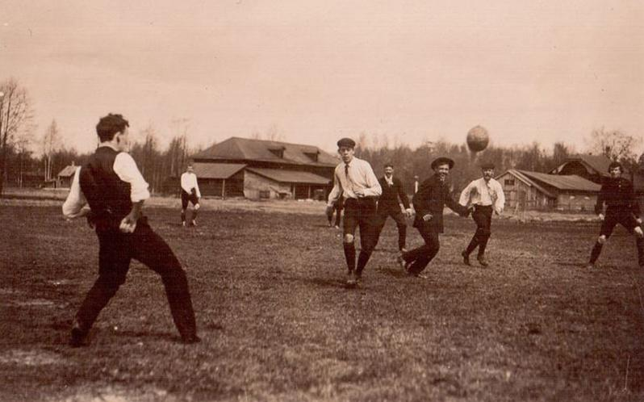

История ФУТБОЛА
Игра с мячом была одним из любимых развлечений у многих народностей, в том числе и в России. Еще в Новгородской республике в XII-XV веках играли в «килу» – командную игру с кожаным мячом, набитым перьями. Однако основателями футбола в том виде, в котором он существует сейчас считаются англичане. Идея игры им не принадлежит. Они позаимствовали ее у итальянцев, которые в XIV веке создали игру «кальчо». В ней играло две команды по 27 человек, причем 15 из них были нападающими. Правилами допускались кулачные бои, поэтому нетрудно представить, насколько динамичной и захватывающей была эта игра. Известно, что флорентийцы не остановили матч, даже когда войска Папы римского осаждали город в феврале 1530 года. Сдержанные англичане адаптировали кальчо к собственному темпераменту и в XIX веке футбол обрел в Англии такую популярность, что потеснил с пьедестала крикет. В 57-году был создан знаменитый «Шеффилд» – клуб являющийся старейшим из существующих, а через шесть лет Футбольная Ассоциация Англии, в которую вошли 11 клубов и команд. Были приняты правила, стандартизированы размеры поля и ворот. В 71 году XIX века был учрежден первый футбольный турнир – Кубок Англии, являющийся на данный момент старейшим в мире. К концу века количество английских клубов перевалило за сотню. Изначально игра должна была оставаться сугубо любительской, поэтому игроков, бравших плату за свою игру, с позором изгоняли из Ассоциации. Так случилось со знаменитой командой престонского футбольного клуба в 1884 году, когда выяснилось, что ее игроки получают зарплату. Однако уже через год Ассоциация официально разрешила платить футболистам, что стало ключевой точкой для зарождения профессионального футбола и появления первой Футбольной лиги. Игра захватила не только Англию. Со стремительностью лавины она начала распространяться по миру и 30 ноября 1872 года состоялся первый международный матч между сборными Англии и Шотландии. Игра быстро перестал быть сугубо английской. В 1904 году в Париже была создана Международная федерация футбола (ФИФА). Она по сей день является главным управляющим органом, организующим международные турниры, в том числе по пляжному и мини-футболу. Футбол появился в России в 1880 году, благодаря иностранным морякам и рабочим, трудившимся на наших заводах. Игра буквально заразила страну и стала одним из самых популярных видов спорта. Считается, что первый футбольный матч состоялся в 1897 году. Сражались команды «Спорт» и «Василеостровское сообщество футболистов». Сообщество тогда победило с разгромным счетом 6:0. Это была в прямом смысле игра без правил. Все, что требовалось – забить мяч в сетку противника, однако, именно этот матч и дал толчок к зарождению российского футбола.